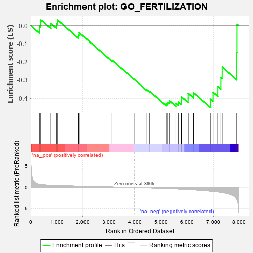

| | | Dataset | 7d |
| Phenotype | NoPhenotypeAvailable |
| Upregulated in class | na_neg |
| GeneSet | GO_FERTILIZATION |
| Enrichment Score (ES) | -0.4505601 |
| Normalized Enrichment Score (NES) | -1.214394 |
| Nominal p-value | 0.21596858 |
| FDR q-value | 0.6091316 |
| FWER p-Value | 1.0 |
Table: GSEA Results Summary

Fig 1: Enrichment plot: GO_FERTILIZATION
Profile of the Running ES Score & Positions of GeneSet Members on the Rank Ordered List
| PROBE | GENE SYMBOL | GENE_TITLE | RANK IN GENE LIST | RANK METRIC SCORE | RUNNING ES | CORE ENRICHMENT | | 1 | WEE2 | | | 333 | 0.766 | -0.0011 | No |
| 2 | BAX | | | 387 | 0.711 | 0.0302 | No |
| 3 | TDRD9 | | | 761 | 0.542 | 0.0121 | No |
| 4 | WDR48 | | | 975 | 0.489 | 0.0113 | No |
| 5 | REC8 | | | 1028 | 0.478 | 0.0303 | No |
| 6 | TDRKH | | | 1836 | 0.331 | -0.0537 | No |
| 7 | SMAD4 | | | 1860 | 0.326 | -0.0392 | No |
| 8 | SYT8 | | | 3115 | 0.135 | -0.1899 | No |
| 9 | GLRA1 | | | 3957 | 0.001 | -0.2957 | No |
| 10 | SPAG1 | | | 4453 | -0.085 | -0.3535 | No |
| 11 | STX2 | | | 4562 | -0.108 | -0.3613 | No |
| 12 | ASH1L | | | 5203 | -0.248 | -0.4287 | Yes |
| 13 | CDK1 | | | 5264 | -0.262 | -0.4223 | Yes |
| 14 | CD9 | | | 5319 | -0.277 | -0.4143 | Yes |
| 15 | FOLR2 | | | 5563 | -0.336 | -0.4269 | Yes |
| 16 | MEIOB | | | 5667 | -0.366 | -0.4204 | Yes |
| 17 | GLRB | | | 5776 | -0.398 | -0.4128 | Yes |
| 18 | TRPC6 | | | 5784 | -0.401 | -0.3923 | Yes |
| 19 | HVCN1 | | | 6034 | -0.482 | -0.3979 | Yes |
| 20 | TRPC3 | | | 6035 | -0.483 | -0.3721 | Yes |
| 21 | VDAC2 | | | 6242 | -0.553 | -0.3686 | Yes |
| 22 | HEXB | | | 6894 | -0.864 | -0.4045 | Yes |
| 23 | PLB1 | | | 6983 | -0.925 | -0.3662 | Yes |
| 24 | AR | | | 7169 | -1.046 | -0.3338 | Yes |
| 25 | ASTL | | | 7290 | -1.159 | -0.2871 | Yes |
| 26 | SPAG8 | | | 7337 | -1.211 | -0.2283 | Yes |
| 27 | PLCB1 | | | 7904 | -2.841 | -0.1481 | Yes |
| 28 | ZAN | | | 7912 | -2.932 | 0.0074 | Yes |
Table: GSEA details [plain text format]
Fig 2: GO_FERTILIZATION: Random ES distribution
Gene set null distribution of ES for GO_FERTILIZATION